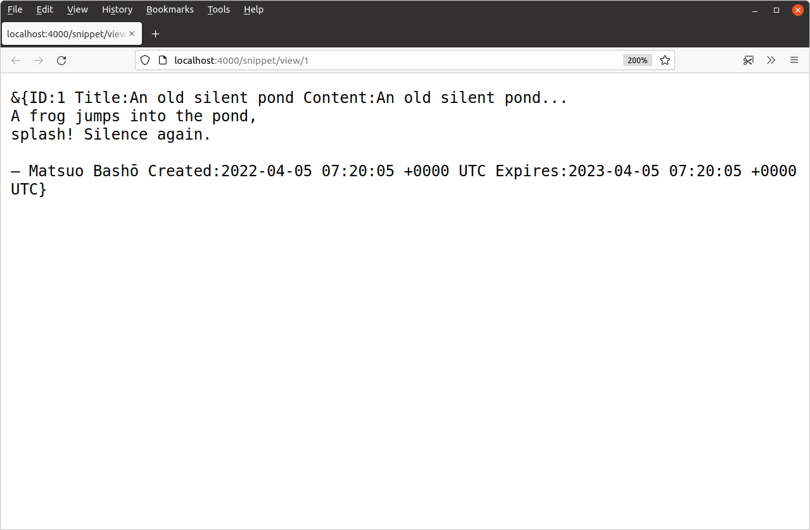
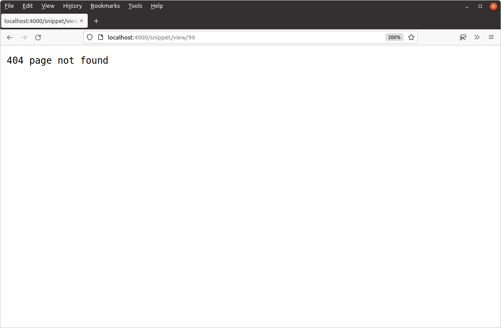

پرسوجوهای SQL تکرکوردی
الگوی اجرای یک دستور SELECT برای بازیابی یک رکورد از پایگاه داده کمی پیچیدهتر است. بیایید نحوه انجام آن را با بهروزرسانی متد SnippetModel.Get() خود توضیح دهیم تا یک snippet خاص را بر اساس ID آن برگرداند.
برای انجام این کار، باید پرسوجوی SQL زیر را روی پایگاه داده اجرا کنیم:
SELECT id, title, content, created, expires FROM snippets WHERE expires > UTC_TIMESTAMP() AND id = ?
چون جدول snippets ما از ستون id به عنوان کلید اصلی خود استفاده میکند، این پرسوجو فقط دقیقاً یک ردیف پایگاه داده (یا هیچ) برمیگرداند. پرسوجو همچنین شامل بررسی زمان انقضا است تا snippetهایی که منقضی شدهاند را برنگردانیم.
همچنین توجه کنید که دوباره از یک پارامتر placeholder برای مقدار id استفاده میکنیم؟
فایل internal/models/snippets.go را باز کنید و کد زیر را اضافه کنید:
package models import ( "database/sql" "errors" // New import "time" ) ... func (m *SnippetModel) Get(id int) (Snippet, error) { // Write the SQL statement we want to execute. Again, I've split it over two // lines for readability. stmt := `SELECT id, title, content, created, expires FROM snippets WHERE expires > UTC_TIMESTAMP() AND id = ?` // Use the QueryRow() method on the connection pool to execute our // SQL statement, passing in the untrusted id variable as the value for the // placeholder parameter. This returns a pointer to a sql.Row object which // holds the result from the database. row := m.DB.QueryRow(stmt, id) // Initialize a new zeroed Snippet struct. var s Snippet // Use row.Scan() to copy the values from each field in sql.Row to the // corresponding field in the Snippet struct. Notice that the arguments // to row.Scan are *pointers* to the place you want to copy the data into, // and the number of arguments must be exactly the same as the number of // columns returned by your statement. err := row.Scan(&s.ID, &s.Title, &s.Content, &s.Created, &s.Expires) if err != nil { // If the query returns no rows, then row.Scan() will return a // sql.ErrNoRows error. We use the errors.Is() function check for that // error specifically, and return our own ErrNoRecord error // instead (we'll create this in a moment). if errors.Is(err, sql.ErrNoRows) { return Snippet{}, ErrNoRecord } else { return Snippet{}, err } } // If everything went OK, then return the filled Snippet struct. return s, nil } ...
در پشت صحنه rows.Scan()، درایور شما به طور خودکار خروجی خام از پایگاه داده SQL را به انواع بومی مورد نیاز Go تبدیل میکند. تا زمانی که با انواعی که بین SQL و Go نگاشت میکنید منطقی باشید، این تبدیلها به طور کلی باید فقط کار کنند. معمولاً:
CHAR،VARCHARوTEXTبهstringنگاشت میشوند.BOOLEANبهboolنگاشت میشود.INTبهintنگاشت میشود؛BIGINTبهint64نگاشت میشود.DECIMALوNUMERICبهfloatنگاشت میشوند.TIME،DATEوTIMESTAMPبهtime.Timeنگاشت میشوند.
اگر در این مرحله سعی کنید برنامه را اجرا کنید، باید یک خطای زمان کامپایل دریافت کنید که میگوید مقدار ErrNoRecord تعریف نشده است:
$ go run ./cmd/web/ # snippetbox.alexedwards.net/internal/models internal/models/snippets.go:82:25: undefined: ErrNoRecord
بیایید ادامه دهیم و آن را اکنون در یک فایل جدید internal/models/errors.go ایجاد کنیم. مانند این:
$ touch internal/models/errors.go
package models import ( "errors" ) var ErrNoRecord = errors.New("models: no matching record found")
به عنوان یک نکته جانبی، ممکن است تعجب کنید که چرا خطای ErrNoRecord را از متد SnippetModel.Get() خود برمیگردانیم، به جای اینکه مستقیماً sql.ErrNoRows را برگردانیم. دلیل این است که به کپسوله کردن کامل مدل کمک کنیم، تا handlerهای ما نگران مخزن داده زیرین نباشند یا به خطاهای خاص مخزن داده (مانند sql.ErrNoRows) برای رفتار خود وابسته نباشند.
استفاده از مدل در handlerهای ما
خوب، بیایید متد SnippetModel.Get() را به کار ببریم.
فایل cmd/web/handlers.go خود را باز کنید و handler snippetView را بهروزرسانی کنید تا دادههای یک رکورد خاص را به عنوان یک پاسخ HTTP برگرداند:
package main import ( "errors" // New import "fmt" "html/template" "net/http" "strconv" "snippetbox.alexedwards.net/internal/models" // New import ) ... func (app *application) snippetView(w http.ResponseWriter, r *http.Request) { id, err := strconv.Atoi(r.PathValue("id")) if err != nil || id < 1 { http.NotFound(w, r) return } // Use the SnippetModel's Get() method to retrieve the data for a // specific record based on its ID. If no matching record is found, // return a 404 Not Found response. snippet, err := app.snippets.Get(id) if err != nil { if errors.Is(err, models.ErrNoRecord) { http.NotFound(w, r) } else { app.serverError(w, r, err) } return } // Write the snippet data as a plain-text HTTP response body. fmt.Fprintf(w, "%+v", snippet) } ...
بیایید این را امتحان کنیم. برنامه را مجدداً راهاندازی کنید، سپس مرورگر وب خود را باز کنید و به http://localhost:4000/snippet/view/1 بروید. باید یک پاسخ HTTP مشابه این ببینید:

همچنین ممکن است بخواهید درخواستهایی برای snippetهای دیگر که منقضی شدهاند یا هنوز وجود ندارند (مانند مقدار id از 99) ایجاد کنید تا تأیید کنید که یک پاسخ 404 page not found برمیگردانند:

اطلاعات اضافی
بررسی خطاهای خاص
چند بار در این فصل از تابع errors.Is() برای بررسی اینکه آیا یک خطا با یک مقدار خاص مطابقت دارد استفاده کردهایم. مانند این:
if errors.Is(err, models.ErrNoRecord) { http.NotFound(w, r) } else { app.serverError(w, r, err) }
در نسخههای بسیار قدیمی Go (قبل از 1.13)، روش رایج برای مقایسهٔ خطاها استفاده از عملگر برابری == بود، مانند این:
if err == models.ErrNoRecord { http.NotFound(w, r) } else { app.serverError(w, r, err) }
اما، در حالی که این کد هنوز کامپایل میشود، استفاده از تابع errors.Is() به جای آن امنتر و بهترین روش است.
این به این دلیل است که Go 1.13 قابلیت افزودن اطلاعات اضافی به خطاها را با پیچیدن آنها معرفی کرد. اگر یک خطا اتفاقاً پیچیده شود، یک مقدار خطای کاملاً جدید ایجاد میشود — که به نوبه خود به معنای این است که بررسی مقدار خطای زیرین اصلی با استفاده از عملگر برابری عادی == امکانپذیر نیست.
تابع errors.Is() با باز کردن پیچ خطاها در صورت نیاز قبل از بررسی تطابق کار میکند.
همچنین تابع دیگری، errors.As() وجود دارد که میتوانید از آن برای بررسی اینکه آیا یک خطا (احتمالاً پیچیده شده) یک نوع خاص دارد استفاده کنید. بعداً در این کتاب از این استفاده خواهیم کرد.
پرسوجوهای تکرکوردی کوتاهنویسی شده
من عمداً کد در SnippetModel.Get() را کمی طولانی کردهام تا کمک به روشنسازی و تأکید بر آنچه در پشت صحنه کد اتفاق میافتد.
در عمل، میتوانید کد را کمی کوتاه کنید با استفاده از این واقعیت که خطاها از DB.QueryRow() تا زمان فراخوانی Scan() به تعویق میافتند. این هیچ تفاوت عملکردی ایجاد نمیکند، اما اگر میخواهید کاملاً درست است که کد را به چیزی شبیه این بازنویسی کنید:
func (m *SnippetModel) Get(id int) (Snippet, error) { var s Snippet err := m.DB.QueryRow("SELECT ...", id).Scan(&s.ID, &s.Title, &s.Content, &s.Created, &s.Expires) if err != nil { if errors.Is(err, sql.ErrNoRows) { return Snippet{}, ErrNoRecord } else { return Snippet{}, err } } return s, nil }